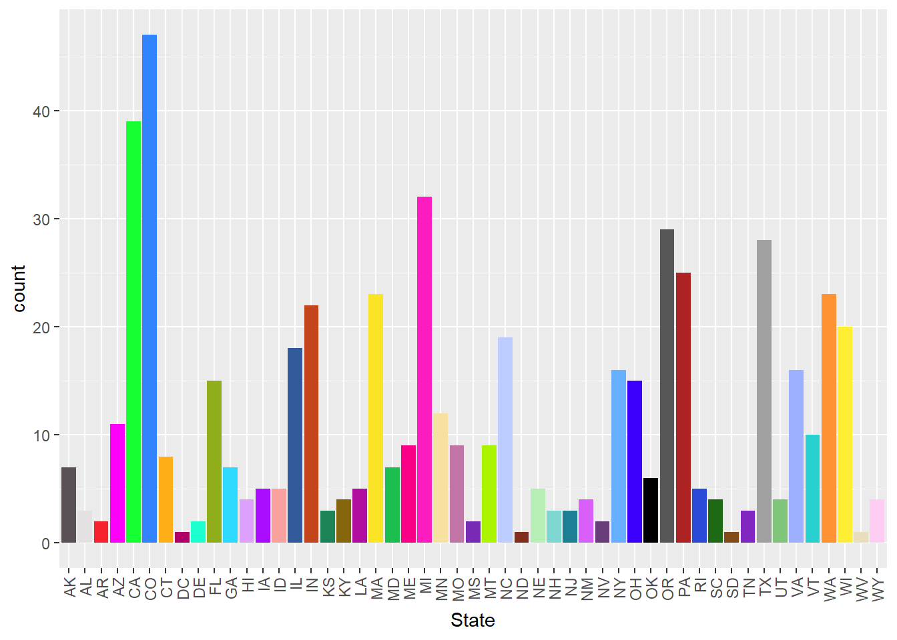
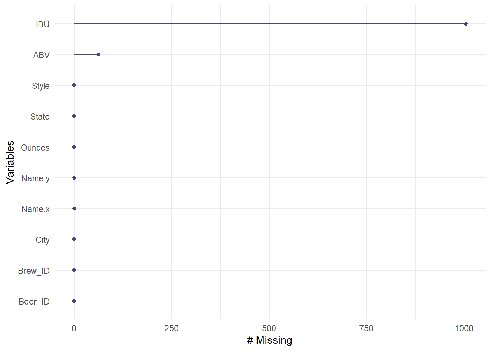
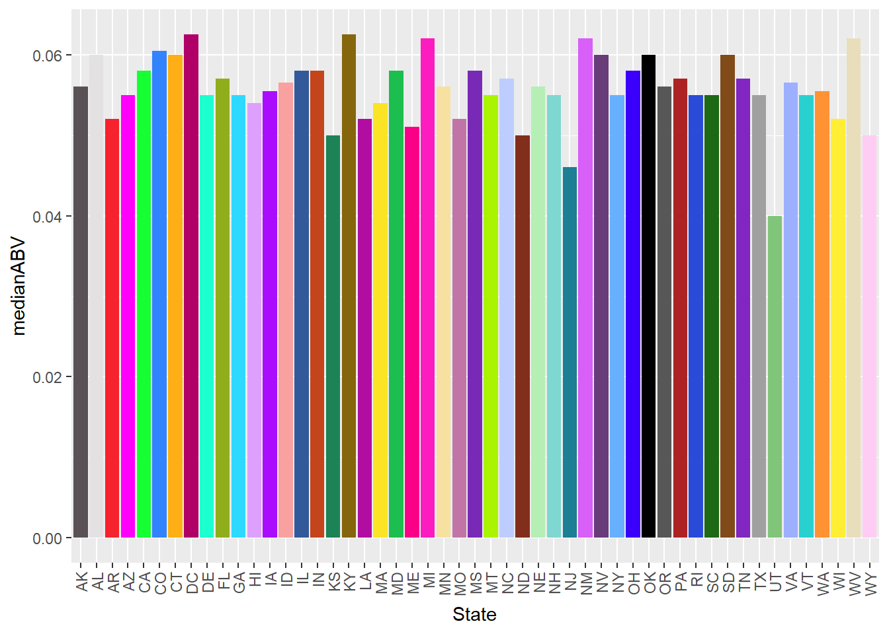
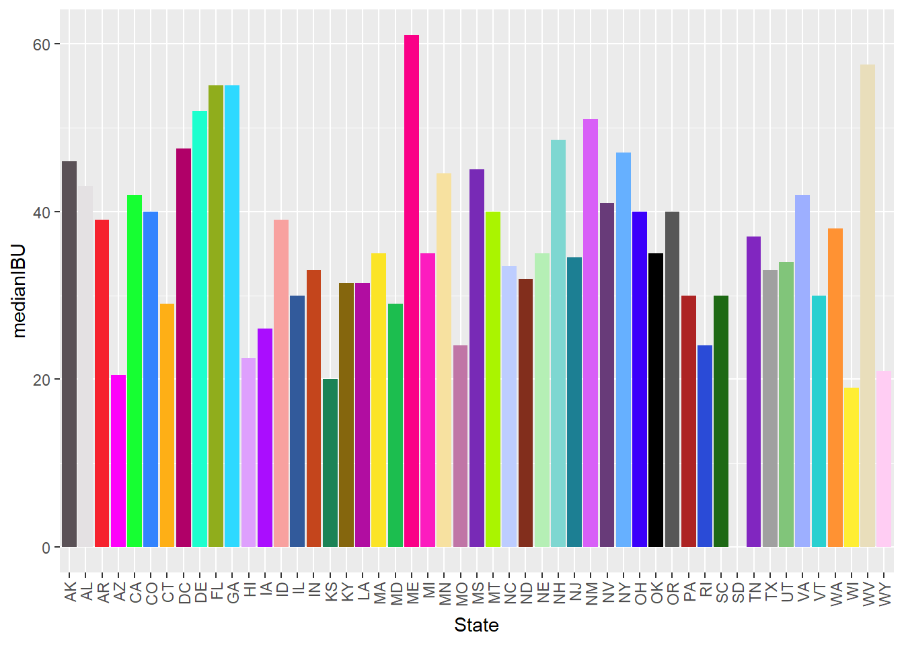
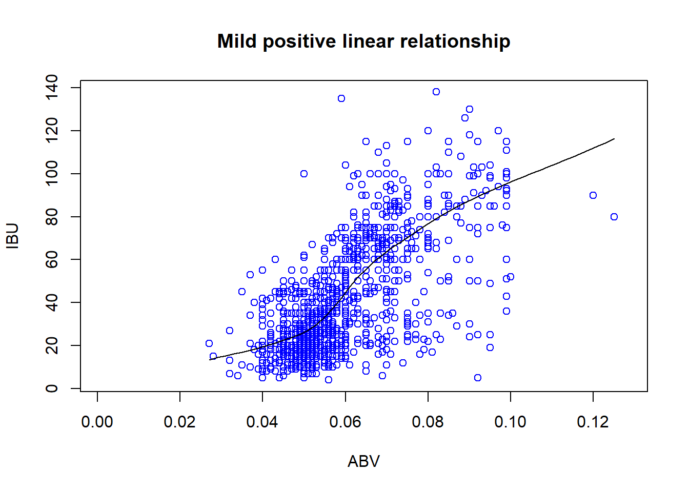
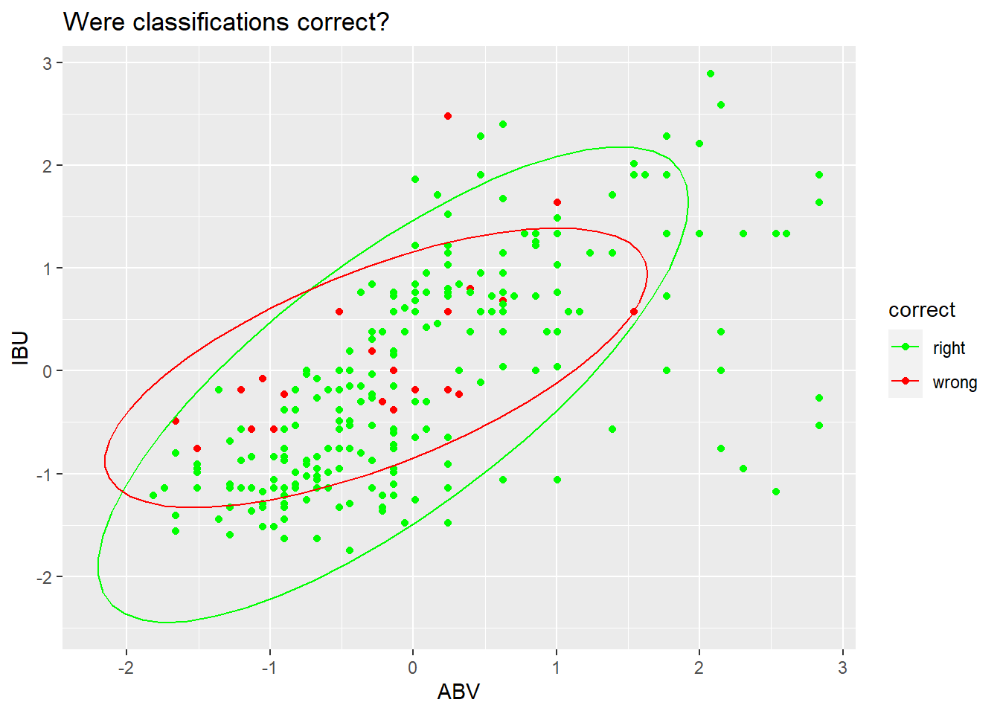
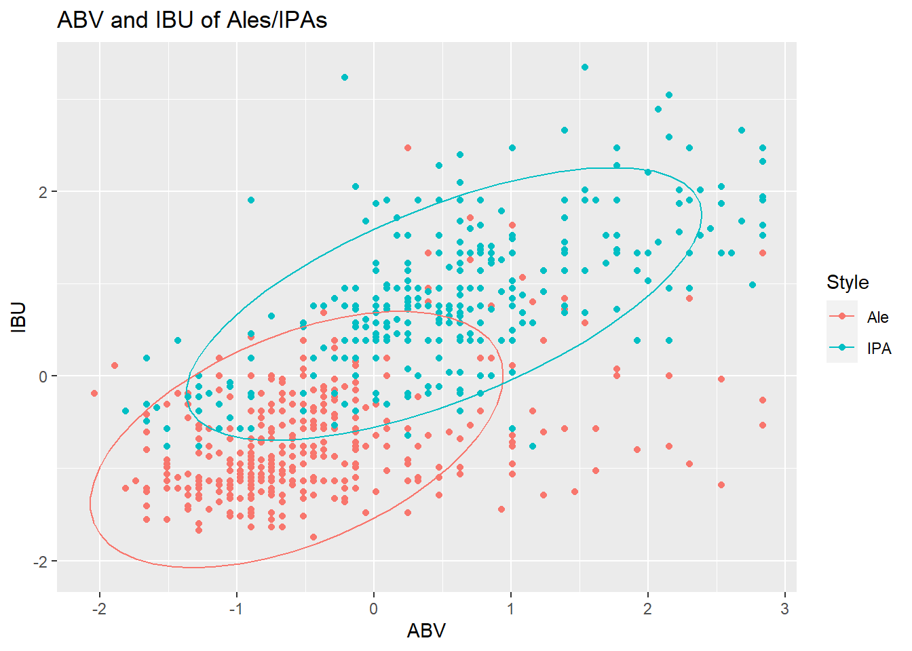
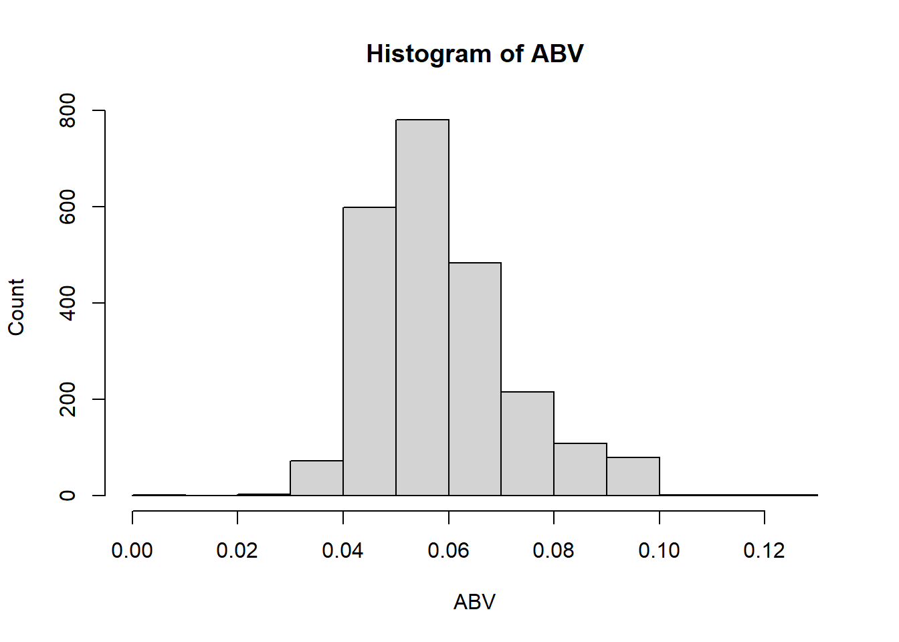

##
## AK AL AR AZ CA CO CT DC DE FL GA HI IA ID IL IN KS KY LA MA MD ME MI MN MO MS
## 7 3 2 11 39 47 8 1 2 15 7 4 5 5 18 22 3 4 5 23 7 9 32 12 9 2
## MT NC ND NE NH NJ NM NV NY OH OK OR PA RI SC SD TN TX UT VA VT WA WI WV WY
## 9 19 1 5 3 3 4 2 16 15 6 29 25 5 4 1 3 28 4 16 10 23 20 1 4
## Brew_ID Name.x City State Name.y Beer_ID ABV IBU
## 1 1 NorthGate Brewing Minneapolis MN Pumpion 2689 0.060 38
## 2 1 NorthGate Brewing Minneapolis MN Stronghold 2688 0.060 25
## 3 1 NorthGate Brewing Minneapolis MN Parapet ESB 2687 0.056 47
## 4 1 NorthGate Brewing Minneapolis MN Get Together 2692 0.045 50
## 5 1 NorthGate Brewing Minneapolis MN Maggie's Leap 2691 0.049 26
## 6 1 NorthGate Brewing Minneapolis MN Wall's End 2690 0.048 19
## Style Ounces
## 1 Pumpkin Ale 16
## 2 American Porter 16
## 3 Extra Special / Strong Bitter (ESB) 16
## 4 American IPA 16
## 5 Milk / Sweet Stout 16
## 6 English Brown Ale 16## Brew_ID Name.x City State Name.y Beer_ID ABV
## 2405 556 Ukiah Brewing Company Ukiah CA Pilsner Ukiah 98 0.055
## 2406 557 Butternuts Beer and Ale Garrattsville NY Porkslap Pale Ale 49 0.043
## 2407 557 Butternuts Beer and Ale Garrattsville NY Snapperhead IPA 51 0.068
## 2408 557 Butternuts Beer and Ale Garrattsville NY Moo Thunder Stout 50 0.049
## 2409 557 Butternuts Beer and Ale Garrattsville NY Heinnieweisse Weissebier 52 0.049
## 2410 558 Sleeping Lady Brewing Company Anchorage AK Urban Wilderness Pale Ale 30 0.049
## IBU Style Ounces
## 2405 NA German Pilsener 12
## 2406 NA American Pale Ale (APA) 12
## 2407 NA American IPA 12
## 2408 NA Milk / Sweet Stout 12
## 2409 NA Hefeweizen 12
## 2410 NA English Pale Ale 12hello_NA = hello_merge[!complete.cases(hello_merge),]
dim(hello_NA)## [1] 1005 10## Brew_ID Name.x City State Name.y Beer_ID ABV IBU
## 19 2 Against the Grain Brewery Louisville KY Kamen Knuddeln 2676 0.065 NA
## 35 6 COAST Brewing Company Charleston SC Rye Knot 2656 0.062 NA
## 36 6 COAST Brewing Company Charleston SC Dead Arm 2655 0.060 NA
## 37 6 COAST Brewing Company Charleston SC 32°/50° Kölsch 2654 0.048 NA
## 38 6 COAST Brewing Company Charleston SC Blackbeard 2657 0.093 NA
## 39 6 COAST Brewing Company Charleston SC Boy King 2652 0.097 NA
## Style Ounces
## 19 American Wild Ale 16
## 35 American Brown Ale 12
## 36 American Pale Ale (APA) 12
## 37 Kölsch 16
## 38 American Double / Imperial Stout 12
## 39 American Double / Imperial IPA 16
## # A tibble: 6 × 3
## State medianABV count
## <chr> <dbl> <int>
## 1 " AK" 0.056 25
## 2 " AL" 0.06 10
## 3 " AR" 0.052 5
## 4 " AZ" 0.055 47
## 5 " CA" 0.058 183
## 6 " CO" 0.0605 265
## # A tibble: 6 × 3
## State medianIBU count
## <chr> <dbl> <int>
## 1 " AK" 46 25
## 2 " AL" 43 10
## 3 " AR" 39 5
## 4 " AZ" 20.5 47
## 5 " CA" 42 183
## 6 " CO" 40 265
## # A tibble: 6 × 2
## State max_alc
## <chr> <dbl>
## 1 " CO" 0.128
## 2 " KY" 0.125
## 3 " IN" 0.12
## 4 " NY" 0.1
## 5 " CA" 0.099
## 6 " ID" 0.099## # A tibble: 6 × 2
## State max_ibu
## <chr> <dbl>
## 1 " OR" 138
## 2 " VA" 135
## 3 " MA" 130
## 4 " OH" 126
## 5 " MN" 120
## 6 " VT" 120
test_IPA_and_Ale %>% ggplot(aes(x = ABV, y = IBU, color = correct)) + geom_point() + stat_ellipse() + scale_color_manual(values = c('green','red')) + ggtitle('Were classifications correct?')
IPA_and_Ale %>% ggplot(aes(x = ABV, y = IBU, color=Style)) +
geom_point() +
stat_ellipse()+ ggtitle('ABV and IBU of Ales/IPAs')
## [1] Ale
## attr(,"prob")
## [1] 0.7142857
## Levels: Ale IPA
6. Comment on the summary statistics and distribution of the ABV variable.

The ABV variable has a mode around .5, is right skewed, and has a range of about .11.